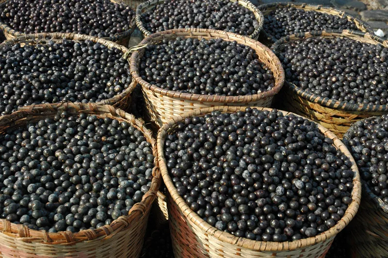

1. Açaí é um fruto brasileiro cultivado predominantemente na região amazônica. Com cor escura, que vai do roxo ao preto, o fruto arredondado nasce em cachos e, na maioria das vezes, em locais com solos mais úmidos ou alagados.
2. Mesmo sendo um fruto característico da Região Norte do país, o açaí se popularizou nacionalmente e é utilizado de diversas formas na culinária brasileira, já que possui muitas propriedades nutricionais.
3. A palmeira do açaí é uma árvore muito grande, podendo chegar até 25 metros de altura! Com um tamanho desses, a palmeira produz em torno de 20 toneladas de frutas por ano. É muito açaí!
4. No sudeste do Brasil costuma-se consumir o açaí com xarope e frutas. Já no norte vemos uma maneira diferente, o creme da fruta é usado em pratos salgados! É comum vê-lo como molho, acompanhando peixe e frango. Além de ser comido junto com a tapioca, outro alimento típico da região.

5. Uma lenda indígena fala sobre o consumo da fruta. Conta-se que uma aldeia passava por dificuldades e não conseguia encontrar alimentos, por isso o cacique decretou que a partir daquele momento, todo bebê que nascesse teria que ser sacrificado, pois não tinha comida para todos. Logo após, a filha do cacique, Iaçã, engravidou. Ele não revogou a ordem, e sua própria neta foi morta.